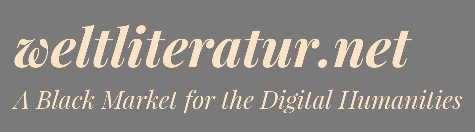

<!doctype html>
<html lang="de">
  <head>
    <meta charset="utf-8" />
    <meta name="viewport" content="width=device-width, initial-scale=1.0, maximum-scale=1.0, user-scalable=no" />

    <title>Robert Jäschke: Liebe &amp; Tod in der DNB (Update des Kölner Vortrags) · Frankfurt · 7.9.2022</title>

    <link rel="stylesheet" href="../reveal.js/css/reveal.css" />
    <link rel="stylesheet" href="../reveal.js/css/theme/simple.css" />

    <!-- Adjustments for serif.css -->
    <link rel="stylesheet" href="custom.css" />

    <!-- Theme used for syntax highlighting of code -->
    <link rel="stylesheet" href="../reveal.js/lib/css/zenburn.css" />

    <!-- Printing and PDF exports -->
    <script>
      var link = document.createElement( 'link' );
      link.rel = 'stylesheet';
      link.type = 'text/css';
      link.href = window.location.search.match( /print-pdf/gi ) ? '../reveal.js/css/print/pdf.css' : '../reveal.js/css/print/paper.css';
      document.getElementsByTagName( 'head' )[0].appendChild( link );
    </script>
  </head>
  <body>
    <div class="reveal">
      <div class="slides">
        <section data-markdown="" data-separator="^\n---\n" data-separator-vertical="^\n--\n" data-charset="utf-8">
<script type="text/template">

# Liebe &amp; Tod in der <br />Deutschen Nationalbibliothek

## Der DNB-Katalog als Forschungsobjekt der <br />digitalen Literaturwissenschaft

<br />
<!-- .element: style="font-size:1.2em;" -->[**Robert Jäschke**](https://amor.cms.hu-berlin.de/~jaeschkr/)

Humboldt-Universität zu Berlin<!-- .element: style="font-size:0.9em;" -->

<br />
<!-- .element: style="font-size:0.8em;" -->(= gekürzte Fassung
des Vortrags mit [Frank Fischer](https://www.geisteswissenschaften.fu-berlin.de/we02/institut/mitarbeiter/Professoren/fischerf/index.html) [FU Berlin] am 1. März 2018 in Köln)

<br />

<br />
[Erschließen, Forschen, Analysieren – EFA22@DNB](https://pretix.eu/dnb/efa22/) &nbsp;·&nbsp; Frankfurt &nbsp;·&nbsp; 8. September 2022


--

## Ausgangslage & Ziele

<br />
- Datendienst der DNB: https://data.dnb.de/opendata/ – Katalogdaten
  unter CC0-Lizenz 😊
- typische Linked-Data-Formate (RDF/XML, JSON-LD, usw.)
- üblicher Ansatz:
  - geeignete Datenbank (Triple-Store) + Anfragen  (i.A. SPARQL)
  - = flexible Anfragen möglich, leichte Einbindung weiterer
    Datenquellen
- aber: Größe der Daten (unkomprimiert ca. 21 GB):
  - hohe Anforderungen an Hardware, Konfiguration und Optimierung
    der Datenbank
- Ziele:
  - einfaches Framework, um verschiedene Aspekte des DNB-Katalogs zu untersuchen
  - kompakte und leicht nachzuvollziehende Lösung
- zwei Anwendungsszenarien aus der Praxis der digitalen Literaturwissenschaft:
 1. Romantitel
 2. Romanumfänge

--

## Inhalt

<br />
2. [Beschreibung des Frameworks](#/1)
4. [Anwendungsfall 1: Romantitel](#/2)
5. [Anwendungsfall 2: Romanumfänge](#/3)
6. [Fazit](#/4)


---

# 1. Beschreibung des Frameworks


--

## Überblick

<!-- .element width="1040px" -->

alle Schritte im [GitHub-Repository](https://github.com/weltliteratur/dnb) dokumentiert

--

## 1. Schritt: <br />Vorverarbeitung und Konvertierung von RDF/XML zu JSON ([rdf2json.py](https://github.com/weltliteratur/dnb/blob/master/rdf2json.py))

- RDF/XML: i. A. Verarbeitung im Hauptspeicher, nicht als Datenstrom
  - unpraktikabel aufgrund der Größe der Daten
- alle wesentlichen Daten zu einem Medium innerhalb `<rdf:Description>`
- Verarbeitung mittels SAX-Parser als XML
  - Extraktion der Metadaten (z. B. »dcterms:contributor«, »dcterms:language«, »dc:title«, »dcterms:extent«, »rdau:P60493«)
  - Speicherung als JSON (weil platzsparender)

--

## 2. Schritt: <br />Extraktion von Daten zu Autor*innen aus Wikidata (Wikidata-Toolkit)

- Ziel: Anreicherung des DNB-Datensatzes mit Informationen aus [Wikidata](https://www.wikidata.org/)
  - z.B. Geburtsdatum/‑ort, Beruf, Verweis auf vorhandene Artikel in Wikipedia
- Python-Bibliothek für Wikidata veraltet → Rückgriff auf Java-basiertes [Wikidata-Toolkit](https://github.com/Wikidata/Wikidata-Toolkit)
- Herunterladen des (am 14.08.2017) 16 GB  großen komprimierten Wikidata-Datensatzes
- [zwei Durchgänge](https://github.com/weltliteratur/dnb/blob/master/WriterExtractor.java):
  1. Extraktion aller Elemente mit GND-Kennung einschließlich ausgewählter Merkmale
  2. Ergänzung der Werte der Merkmale (z. B. Sprache, Ort)
- Ergebnis als JSON

--

## 3. Schritt: <br />Normalisierung und Anreicherung <br/> ([json2json.py](https://github.com/weltliteratur/dnb/blob/master/json2json.py))

- Python-Skript implementiert Pipeline:
  - Einlesen aller Daten aus den vorherigen Schritten
  - Verknüpfung mittels GND-Kennung
  - Extraktion von Metadatenangaben (z. B. Seitenanzahlangabe)
  - Vereinfachung und Normalisierung
  - Filterung von Datensätzen mit fehlenden Angaben
  - spaltenbasierte Ausgabe als TSV
- Vereinfachung: v. A. Entfernen von Namespace-Präfixen
  - etwa `http://id.loc.gov/vocabulary/iso639-2/` zur Angabe der Sprache
- Extraktion von [Seitenanzahlen](https://github.com/weltliteratur/dnb/tree/master/sparql#analysing-the-page-numbers)/Jahreszahlen mit Hilfe eines regulären Ausdrucks
- Normierung von Verlagsnamen mit Hilfe einer [Normtabelle](https://github.com/weltliteratur/dnb/blob/master/publisher_map.tsv) möglich
  - notwendig, da keine standardisierte Schreibung innerhalb des Katalogs

--

## 4. Schritt: <br />Analyse<br/> (awk, sort, datamash, gnuplot, ...)

- TSV-Dateien können mit den üblichen Unix-Werkzeugen wie `awk`,
  `sort`, `uniq`, etc. leicht verarbeitet und [analysiert](https://github.com/weltliteratur/dnb#results) werden

  ```sh
  datamash -g1 median 2 mean 2 min 2 max 2 count 2 q1 2 q3 2 \
    < items_per_year-novel_page_author.tsv \
        > issued_pages_stats.tsv
  ```

- Visualisierung mit gnuplot

--

## Visualisierung von Subdatensätzen (1/2)

<br />

- von den <span style="color:#030dcc">etwa **14,1 Mio.** Objekten im
  DNB-Datensatz</span> weisen <span style="color:#feb24c">etwa
  **8,3 Mio.** extrahierbare Seitenanzahlen auf (59 %)</span>
- laut Datenfeld
  [»rdau:P60493«](http://www.rdaregistry.info/Elements/u/#P60493)
  (»has other title information«) sind insgesamt <span
  style="color:#fc4e2a">**353 498** der Medien ›Romane‹</span>, davon
  weisen wiederum <span style="color:#bc0026">**316 518**
  Umfangsangaben</span> auf und <span
  style="color:#59001a">**180 219** Verfasser&#42;innen, die einen
  Wikipedia-Eintrag (in egal welcher Sprache) besitzen</span>
  - Achtung: das ist nicht die Gesamtanzahl an tatsächlichen Romanen
    (Nachauflagen/Übersetzungen zählen mit, Befüllung des Feldes ist
    teils inkonsistent) <!-- .element style="color:gray;" -->
- Verschränkung mit Wikipedia als bedeutungsgebender Instanz, um
  *vanity works*, selbstverlegte Books on Demand usw. herauszufiltern

<!-- .element width="200px" -->

--

## Visualisierung von Subdatensätzen (2/2)

<!-- .element width="640px" -->

<small> Fünf verschieden qualifizierte Subdatensätze des DNB-Katalogs in zeitlicher Verteilung.</small>

---

# 2. Anwendungsfall 1: <br />Romantitel

--

## Häufigste Substantive in Romantiteln

<br />

| Substantiv | Frequenz |
|:-:|:-:|
| Liebe | 3 117 |
| Mann | 1 906 |
| Frau | 1 686 |
| Tod | 1 537 |
| Nacht | 1 505 |
| Leben | 1 496 |
| Welt | 1 188 |
| Haus | 1 158 |
| Zeit | 1 037 |
| Schatten | 1 029 |

<br />
<small>Häufigste Substantive in Romantiteln im gesamten DNB-Katalog.</small>

--

## Aus dem Schlagwortbaukasten, siehe auch:

<br />
<iframe width="800" height="450" src="https://www.youtube.com/embed/h8MVXC_hqNY?rel=0&amp;controls=0&amp;start=39" frameborder="0" allow="autoplay; encrypted-media" allowfullscreen></iframe>

<br />

<small>Jim Pandzko feat. Jan Böhmermann: »Menschen Leben Tanzen Welt«. (Neo Magazin Royale, 5. April 2017, [YouTube-Direktlink](https://www.youtube.com/watch?v=h8MVXC_hqNY))</small>

--

## Häufigste Trigramme in Titeln

<br />

| Trigramm | Frequenz |
|:-:|:-:|
| Das Geheimnis der | 238
| Das Haus der | 224
| Der Mann der | 189
| Das Geheimnis des | 175
| Die Tochter des | 160
| Im Schatten des | 128
| Der Mann im | 128
| Das Lied der | 125
| Die Frau des | 124
| Die Reise nach | 108

<br />
<small>Häufigste Trigramme in Romantiteln im DNB-Katalog.</small>

--

## DNB Goes Ngram Viewer (1/2)

<!-- .element width="640px" -->

<small>Vorkommen ausgewählter Wörter in Romantiteln im zeitlichen Verlauf (**absolut**).</small>

--

## DNB Goes Ngram Viewer (2/2)

<!-- .element width="640px" -->

<small>Vorkommen ausgewählter Wörter in Romantiteln im zeitlichen Verlauf (**relativ**). · OMNIA VINCIT AMOR.</small>

---

# 3. Anwendungsfall 2: Romanumfänge

--

## Romanumfangsforschung

<br />
- Erforschung des Einflusses von Textlängen auf Rezeptions-, Interpretations- und Kanonisierungsprozesse
- quantitative Beschreibung des literarischen Erbes
- empirische Zuarbeit zu einer entstehenden Theorie des literarischen Textumfangs
- mehr dazu:
 - Fischer/Jäschke: *Ein Quantum Literatur. Empirische Daten zu einer Theorie des literarischen Textumfangs.* DFG-Symposium »Digitale Literaturwissenschaft«. Villa Vigoni, 9.–13. Oktober 2017. ([entsprechender Sammelband demnächst bei Metzler](https://doi.org/10.1007/978-3-476-05886-7_32))

--

## Realitätsabgleich

<!-- .element width="640px" -->

<small>Anzahl der Bücher pro Seitenanzahl im Umfangsbereich 200 bis 400 Seiten.
<br/><br/>
**Publikumsfrage:** Es gibt einen Peak aller 16 Seiten, weil …</small>

--

## Entwicklung des Romanumfangs seit 1913

<!-- .element width="640px" -->

<small>Entwicklung der mittleren Seitenanzahl pro Jahr seit 1913. – Scheint eine Vermutung von Helge Malchow zu bestätigen: »Mit dem Einzug des Computers in den Schreibprozess sind die Romane nach meinem Eindruck im Durchschnitt um zehn Prozent länger geworden.« ([*Die Zeit* 47/2012](http://www.zeit.de/2012/47/Buecher-Internet-Literatur-Verleger/komplettansicht))</small>

---

# 4. Fazit

--

## Zusammenfassung und Ausblick

<br />
- Katalogdaten/Metadaten sind ein sinnvolles Untersuchungsobjekt der Literaturwissenschaft
- vorgestelltes Framework soll einfacher Explorier- und Kontrollierbarkeit der Daten dienen
- zwei Anwendungsfälle als Inspiration
- in Zukunft: Austausch/Interaktion zwischen Wissenschaftler&#42;innen und Bibliotheken/Datendiensten stärken
- Idee: Workshop zur *literaturwissenschaftlichen* Beschäftigung mit Katalogdaten?

--

<!--

qrencode -s15 -o images/qrcode.png "https://slides.igada.de/2022-09-08-efa/"

-->

<div style="float:right; width:24%;">
  <a href="https://slides.igada.de/2022-09-08-efa/"></a>

  <p style="font-size:.45em;padding-top:0px;margin-top:0px;">
    <a href="https://slides.igada.de/2022-09-08-efa/">https://slides.igada.de/2022-09-08-efa/</a>
  </p>

  <a href="https://www.bibsonomy.org/"></a>

  <a href="http://weltliteratur.net/"></a>


</div>


<!-- .element: style="width:100%;margin-bottom:0px;" -->

<!-- .element: style="width:70%;margin-bottom:0px;margin-top:0px;" -->

<small>
Quelle: [XKCD, Randall Munroe](https://xkcd.com/1256) / CC BY-NC 2.5
</small>

<!-- .element: style="margin-top:0px;" -->


<ul>
<li class="clap">Dank an
  [Frank Fischer](https://lehkost.github.io/)
<li class="mail"> [robert.jaeschke@hu-berlin.de](mailto:robert.jaeschke@hu-berlin.de)
<li class="web">https://hu.berlin/RJ
</ul>


<!-- .element: style="width: 70%; float:left;" -->


</script>
        </section>
      </div>
    </div>
    <script src="../reveal.js/lib/js/head.min.js"></script>
    <script src="../reveal.js/js/reveal.js"></script>

                <script>
                        // More info https://github.com/hakimel/reveal.js#configuration
                        Reveal.initialize({
                                history: true,

                                // More info https://github.com/hakimel/reveal.js#dependencies
                                dependencies: [
                                        { src: '../reveal.js/plugin/markdown/marked.js' },
                                        { src: '../reveal.js/plugin/markdown/markdown.js' },
                                        { src: '../reveal.js/plugin/notes/notes.js', async: true },
                                        { src: '../reveal.js/plugin/highlight/highlight.js', async: true, callback: function() { hljs.initHighlightingOnLoad(); } }
                                ]
                        });
                </script>
  </body>
</html>
